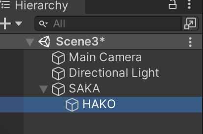

では最初のスプリントを開始しましょう。
まずプロダクトバックログから今回のスプリントで行うアイテム(タスク)を選択して Doing に移します。
今回は「TARO」ゲームオブジェクトを作って上下左右に動かします。
| ToDo | Doing | Done |
|---|---|---|
| 背景を表示する | ||
| TARO を表示する | ||
| TARO を動かす | ||
| HANAKO を表示する | ||
| HANAKO を動かす | ||
| APPLE を表示する | ||
| APPLE を動かす | ||
| ORANGE を表示する | ||
| 当たり判定をする | ||
| ゲームクリア処理をする | ||
| ゲームオーバー処理をする |
次に詳細仕様書を作成します。
今回は次の様に詳細仕様書を作りました。
何もしないと「TARO」は画面から自由に出たり入ったり出来てしまうので、カメラの表示領域外に見えない壁オブジェクトを置いて「TARO」を画面内に閉じ込めることにしました。
| ゲームオブジェクト名 | 詳細仕様 |
|---|---|
| TARO |
・主人公オブジェクト1
・全体仕様書に貼った画像を使う (50x57 ピクセル) ・ゲーム開始時の初期座標は(-3.7,1.9) ・重力無し、重さはデフォルト、他のオブジェクトとぶつかっても回転しない ・キーボードのカーソルキー又はコントローラーの方向ボタンで上下左右移動を行う(移動速度は x 方向、y 方向ともに 2f ) ・当たり判定の形状は四角(Box Collider 2D)、大きさはデフォルト |
| TOPWALL |
・上側の壁オブジェクト
・画像は無し(透明) ・重さなし (Rigidbody 2D をアタッチしない) ・当たり判定の形状は四角(Box Collider 2D)、幅は表示画面幅と同じ、高さは任意 |
| UNDERWALL |
・下側の壁オブジェクト
・画像は無し(透明) ・重さなし (Rigidbody 2D をアタッチしない) ・当たり判定の形状は四角(Box Collider 2D)、幅は表示画面幅と同じ、高さは任意 |
| LEFTWALL |
・左側の壁オブジェクト
・画像は無し(透明) ・重さなし (Rigidbody 2D をアタッチしない) ・当たり判定の形状は四角(Box Collider 2D)、幅は任意、高さは表示画面高さと同じ |
| RIGHTWALL |
・左側の壁オブジェクト
・画像は無し(透明) ・重さなし (Rigidbody 2D をアタッチしない) ・当たり判定の形状は四角(Box Collider 2D)、幅は任意、高さは表示画面高さと同じ |
次に詳細仕様書から具体的な作業(タスク)をリストアップしてスプリントバックログを作ります。
今回は以下のようなスプリントバックログを作りました。※ DoingとDoneの列は省略
| ToDo |
|---|
| TARO を表示する |
| TARO を上下左右に動かす |
| 壁を設置してTAROを閉じ込める |
スプリントバックログの内容に沿って、以下の様にコーディングします。
画像を用意し「TARO」に名前変更して下さい(※ 拡張子は変更しないよう注意)。
画像をアセットに登録し、更にゲームオブジェクト化して下さい。
Inspector ウィンドウの Transform の Position の x と y で TARO の初期位置をセットして下さい。座標は(-3.7,1.9)です。
「TARO」を選択し、Inspector で Rigidbody 2D をアタッチして設定します。重力(Gravity Scale)を 0 にし、他のオブジェクトとぶつかっても回転しない様に Constraints → Freeze Rotation → Z にチェックを入れて下さい。
「TARO」スクリプトを新規作成し、「TARO」オブジェクトにアタッチして下さい。
「TARO」スクリプトをエディタで開き、 Update メソッドの下に void FixedUpdate() メソッドを追加して下さい。
FixedUpdate メソッド内に「上下左右に動かす」プログラムを記述して下さい。移動速度は x 方向、y 方向ともに 2f です。
「TARO」を選択し、Inspector で Box Collider 2D をアタッチして下さい。衝突の範囲はデフォルトのままで結構です。
底(UNDERWALL)を作ります。Hierarchy ウィンドウで右クリックし Create Empty で空のオブジェクトを作り、「UNDERWALL」に名前を変更して下さい。
「UNDERWALL」オブジェクトを画面外の底に移動して下さい。
「UNDERWALL」オブジェクトに Box Collider 2D をアタッチして下さい。更に衝突範囲の幅を表示画面幅と同じサイズに引き伸ばしてください(下の画面写真を参考にして下さい)。高さは任意です。
同様に「TOPWALL」、「LEFTWALL」、「RIGHTWALL」も作成して下さい。
この時点での開発画面は以下の様になっています(クリックで画像のみ表示)

コーディングが終わったらテストします。
実行ボタンを押して動作確認して下さい。
上手く動作しなかった場合は動作を止めてデバッグして下さい。
本来はその後スプリントレビュー、レトロスペクティブ、リリース作業があるのですが、今回は省略して次のスプリントに移ります。
なお、この時点でのプロダクトバックログの状態は次の通りです。
| ToDo | Doing | Done |
|---|---|---|
| 背景を表示する | ||
| TARO を表示する | ||
| TARO を動かす | ||
| HANAKO を表示する | ||
| HANAKO を動かす | ||
| APPLE を表示する | ||
| APPLE を動かす | ||
| ORANGE を表示する | ||
| 当たり判定をする | ||
| ゲームクリア処理をする | ||
| ゲームオーバー処理をする |